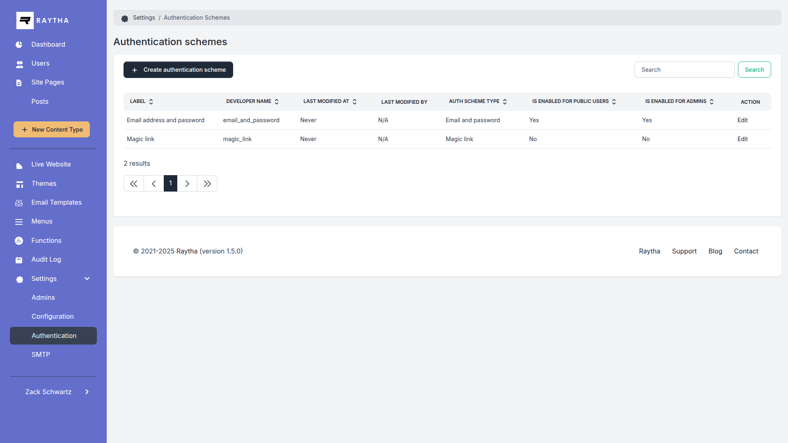

Authentication Schemes
Configure how administrators and public users log in to your website. Enable multiple authentication methods including passwords, magic links, SAML, and JWT.
Accessing Authentication Schemes
Navigate to Settings > Authentication Schemes.

Built-in Schemes
Email and Password
Traditional username/password authentication.
- For Admins: Enable/disable admin login with email and password
- For Users: Enable/disable public user login
- Brute Force Protection: Lock accounts after failed attempts
Magic Link
Passwordless login via email link.
- User requests login link via email
- Link expires after configured time (default: 15 minutes)
- No password required

Editing a Scheme
- Click on the authentication scheme
- Configure settings:
- Enabled for Admins: Allow admin panel login
- Enabled for Users: Allow public user login
- Login Button Text: Text shown on login page
- Click Save
Brute Force Protection
Protect against password guessing attacks:
| Max Failed Attempts |
Number of attempts before lockout (default: 10) |
| Window (Seconds) |
Time period for counting attempts (default: 60) |
After exceeding attempts, users must wait for the window to reset.
Creating Custom Schemes
Add external authentication providers:
- Click Create Authentication Scheme
- Select the type:
- SAML: Enterprise single sign-on
- JWT: Token-based authentication
- Configure provider-specific settings
- Click Create

SAML Configuration
For enterprise identity providers (Okta, Azure AD, etc.):
- IdP Entity ID: Identity provider identifier
- Sign-In URL: SSO login endpoint
- Sign-Out URL: SSO logout endpoint
- Certificate: X.509 certificate from IdP
Tip: See the Developer Guide for detailed SAML configuration instructions.
JWT Configuration
For custom token-based authentication:
- Secret Key: Key for validating JWT signatures
- High Security Mode: Additional validation requirements
Tip: See the Developer Guide for detailed JWT configuration instructions.
Login Page
The login page automatically displays buttons for all enabled authentication schemes.

Deleting a Scheme
- Open the authentication scheme
- Click Delete
- Confirm deletion
Warning: Users who only have this authentication method will lose access. Built-in schemes cannot be deleted.